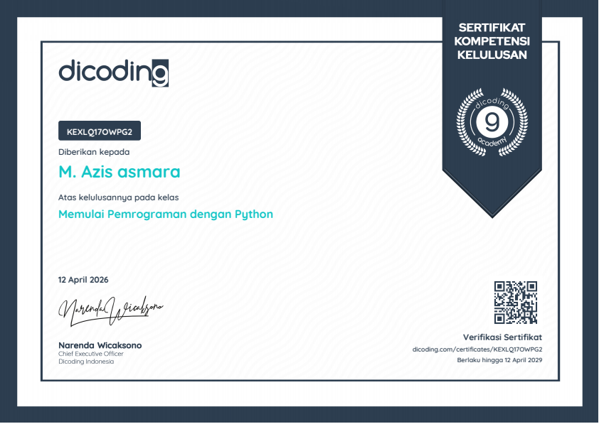

Halo, Saya M. Azis Asmara
Selamat datang di halaman portofolio M. Azis Asmara, seorang Backend Developer dari Makassar.
Selamat datang di halaman portofolio M. Azis Asmara, seorang Backend Developer dari Makassar.
Halo! Saya M. Azis Asmara, seorang Backend Developer muda yang berdomisili di Makassar, Indonesia. Sebagai seorang M. Azis Asmara (atau akrab disapa Azis), saya memiliki dedikasi tinggi dalam mengeksplorasi teknologi terbaru, khususnya di bidang pengembangan sistem sisi server dan integrasi perangkat keras.
Fokus utama saya saat ini adalah mengembangkan arsitektur backend yang efisien menggunakan bahasa pemrograman PHP dan Python. Selain itu, saya aktif melakukan eksperimen dalam ekosistem Linux dan otomatisasi menggunakan MySQL sebagai basis data utama untuk penyimpanan informasi yang terstruktur.
Di luar aktivitas coding web, saya merupakan siswa di SMKN 7 Makassar jurusan Rekayasa Perangkat Lunak (RPL). Saya sangat antusias dengan dunia IoT (Internet of Things) dan robotika, di mana saya sering mengintegrasikan sensor dengan dashboard monitoring real-time untuk menciptakan solusi teknologi yang bermanfaat bagi kehidupan sehari-hari.
Nama: M. Azis Asmara
Panggilan: Azis
Lahir: Makassar, 7 April 2009
Domisili: Makassar, Indonesia
Fokus:Mengembangkan basic skills dan pengetahuan umum.
Jurusan: RPL (Rekayasa Perangkat Lunak)
Fokus: Web Development (Fullstack), Basis Data, IoT System, dan Robotics.
Fokus: Web Development (Fullstack), Artificial Inteligence, dan Cloud System.
PHP & Web Tech
PHP 8.x & Tailwind CSS

Dasar AI
Financial Literacy

Dasar Python

KKRI 2025